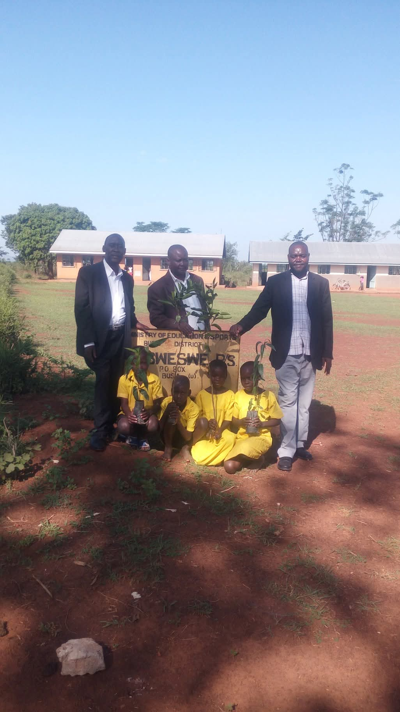
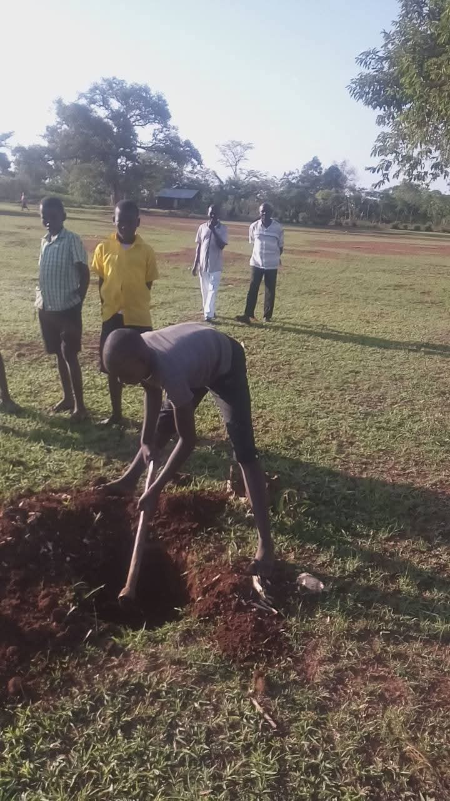

The Community Orchard Expansion Project focuses on establishing and maintaining fruit orchards in rural and peri-urban areas of Busia and surrounding districts. By working directly with local communities, we help create a sustainable source of food, income, and environmental resilience.
Through hands-on training in orchard management and fruit tree care, we empower families, schools, and youth groups to actively participate in reforestation and agricultural innovation — nurturing both the land and livelihoods.
Project Gallery



Project Impact
- 🌿 5,000+ fruit trees planted across communities
- 👩🌾 250 youth trained in orchard management
- 🏘️ 20 community orchards established and maintained